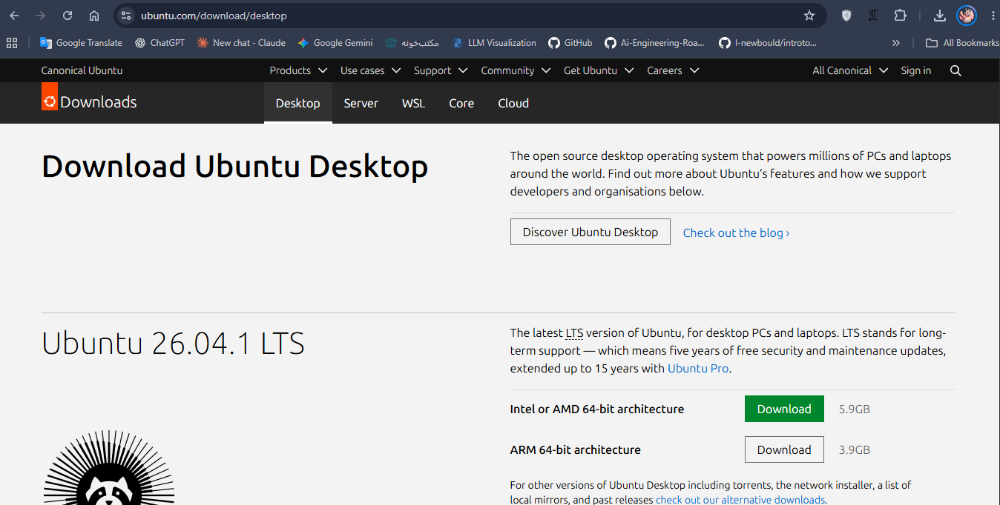
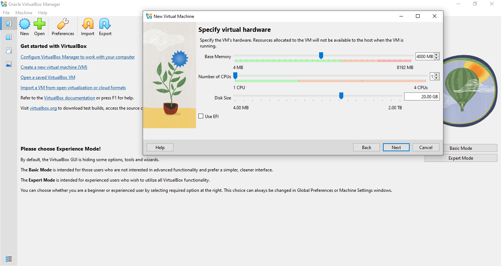
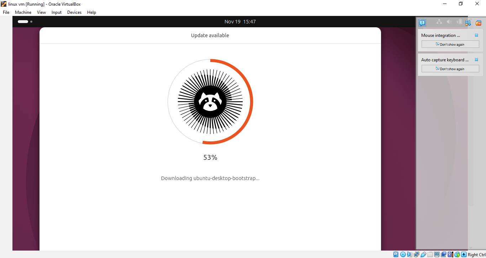

Building a Virtual Machine with a Linux Distribution
Virtualization — installing a Linux distribution inside VirtualBox without touching the main operating system
01 / Mission goal
The goal of this project is to build a virtual machine (VM) and fully install a Linux distribution on it. A virtual machine behaves like a real computer but runs inside an application on the main operating system, so Linux can be explored and risky changes tested without any risk to Windows or the main data. In this project I become familiar with resource allocation (RAM and virtual disk), attaching an ISO file as a virtual DVD drive, the OS installation process and the Snapshot feature. This skill is a foundation for test environments, training and professional IT work.
02 / Tools and environment
Oracle VirtualBox: free virtualization software that creates and runs the virtual machine.
Linux distribution ISO file: the OS installation image, downloaded from the distribution's official site (Ubuntu; free and safe distributions such as Linux Mint are also good options).
Host system: Windows, with Virtualization enabled in the BIOS/UEFI.
Virtual machine specifications: RAM of 4 GB and a virtual disk of 20 GB (suggested project values; if yours differ, replace them with your actual values).
03 / Steps and execution screenshots
- Download the virtualization software:We download VirtualBox from the official Oracle website.

Downloading VirtualBox from the official Oracle website - Download a trial ISO:We download a lightweight Linux distribution (Ubuntu or Linux Mint) from its official website.

Downloading the Linux ISO file from the official website - Create a new VM:In VirtualBox we click New, choose a name and specify the operating system type and version.

Creating a new VM: name, OS type and version - Allocate RAM:We assign some of the system's RAM (for example 2 to 4 GB) to the VM, making sure it is not more than half of the host system's total RAM.

Allocating RAM to the virtual machine - Create a virtual disk:We create a new virtual hard disk of a specific size (for example 20 GB).

Creating the virtual hard disk (Virtual Disk) - Attach the ISO file:In the VM settings we open the Storage section and register the downloaded ISO file as the virtual DVD drive.

Attaching the ISO file in the Storage section - Start the VM:We click Start; like a real computer, the operating system installation process begins from the ISO.

Starting the VM and booting from the ISO - Install the operating system:We follow the installation steps like a real installation until Linux is installed on the virtual disk.

Running the Linux installer inside the VM - Final challenge:Inside the installed VM we create a text file, shut the VM down with Shut down, start it again and check that the file is still there.

The text file created, shown after restarting the VM - Snapshot test:Using the Snapshot feature we save the VM's current state so that we can return to that exact moment if needed.

Saving a Snapshot of the VM's state
04 / Findings and technical analysis
The table below shows the virtual machine settings and the reason for choosing each one.
| Item | Value | Reason / explanation |
|---|---|---|
| Virtualization software | Oracle VirtualBox | Free and suitable for learning |
| Guest operating system | Ubuntu (Linux) | A free and safe distribution, suitable for practice |
| Dedicated RAM | 4 GB | No more than half of total RAM, so the host system does not slow down |
| Virtual disk | 20 GB | Enough space for the operating system and a few applications |
| Installation source | ISO → Virtual DVD | The ISO file acts like a real installation disc |
- A virtual machine is a complete computer with a virtual CPU, RAM, disk and optical drive that borrows its resources from the host system; for this reason, allocating too much RAM to the VM harms the performance of the main Windows system.
- The virtual hard disk is in practice a file on the host system's disk, but to Linux it looks like a real disk, and the installation is performed on it, not on the real disk.
- The text file remaining after Shut down and a fresh Start (the project's challenge) showed that data is stored on the virtual disk and is not lost when the VM is shut down.
- The Snapshot feature makes it possible to save the VM's current state and return to it, which makes it an excellent tool for testing risky changes.
05 / Problems and solutions
| Problem | Solution |
|---|---|
| The VM does not start or is slow; Virtualization may be disabled in the BIOS/UEFI | Enter the BIOS/UEFI settings and enable the Virtualization feature (the exact name of the option varies by motherboard) |
06 / Summary and lessons learned
In this project I learned that with VirtualBox a complete computer can be built in software and a new operating system installed without any risk to the main system. I became familiar with concepts such as RAM allocation, creating a virtual hard disk, registering an ISO file as a virtual DVD and the OS installation steps, and saw that enabling Virtualization in the BIOS/UEFI is a prerequisite for a virtual machine to run correctly. The test of creating a file and rebooting the VM also showed that the virtual hard disk keeps data just like a real disk.
The virtual machine can be a foundation for future work; for example, practicing Linux terminal commands, testing software, or building separate environments for programming and artificial intelligence projects, and the Snapshot feature allows trial and error without worry.